Codex 工程化指南：AGENTS.md、Skills、Subagents、MCP、Hooks 一篇讲透
大家好，我是小林。
用了 Claude 三个月后，我也成功喜提 A➗封号了。
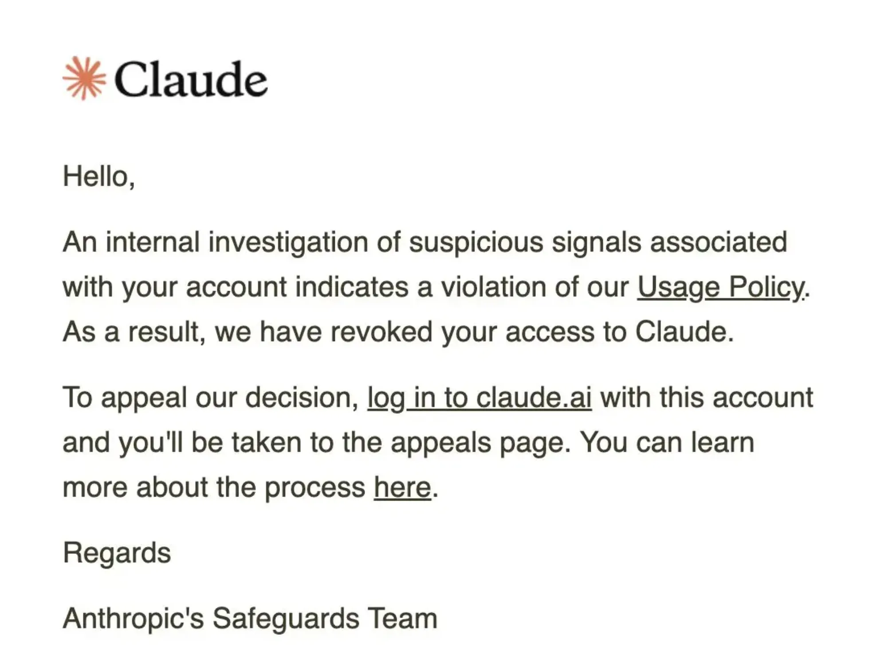
Claude 被封之后，我就转投 Codex 的怀抱了。
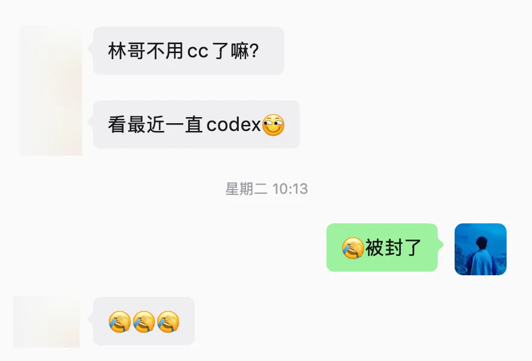
之前我写过一篇 Claude Code 工程化的文章。最近我又研究了一下 Codex 的工程化能力，发现两者的很多功能其实是相通的。
所以这次就来聊聊 Codex 里五个常用的工程化能力，分别是 AGENTS.md、Skills、Subagents、MCP 和 Hooks。
01｜ AGENTS.md ：Codex 怎么记住项目？
为什么每次都要重新交代？
假设团队的技术文档仓库有一组固定规则：正文使用中文，一篇文档只能有一个一级标题，图片放进 images/，published/ 中的内容不能直接修改。
如果每个新任务都要重新交代，既麻烦又容易遗漏。没有拿到这些规则时，Codex 只能按常见做法处理。
AGENTS.md 就是放在仓库里的「项目入职手册」。Codex 开始任务前会读取它，后续的分析、修改和验收都会遵守其中的规则。
怎么创建 AGENTS.md ？
创建 AGENTS.md 有两种方式。
最直接的做法，是在项目根目录手动新建一个 AGENTS.md，再把团队的目录约定、修改规则和检查命令写进去。
也可以让 Codex 帮你生成。先在 Codex 中按 Cmd/Ctrl + O 打开 product-docs 项目。
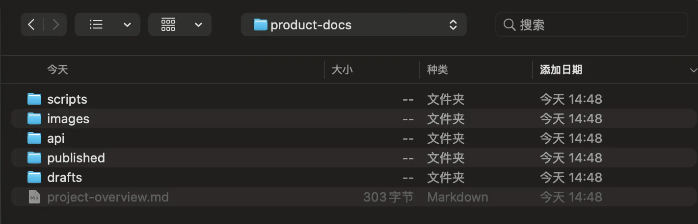
再发送这段提示词。
请在当前项目根目录创建 AGENTS.md。
这是一个团队技术文档仓库。
所有正文使用中文，一篇文档只能有一个一级标题。
文件名使用小写英文和连字符，图片统一放在 `images/`。
`published/` 中的文档只读，不要直接修改。
完成修改后执行 `python3 scripts/check_docs.py` 检查标题和图片引用。
先只创建规则文件，不修改任何文档，也不执行检查命令。
Codex 会生成一份 AGENTS.md。
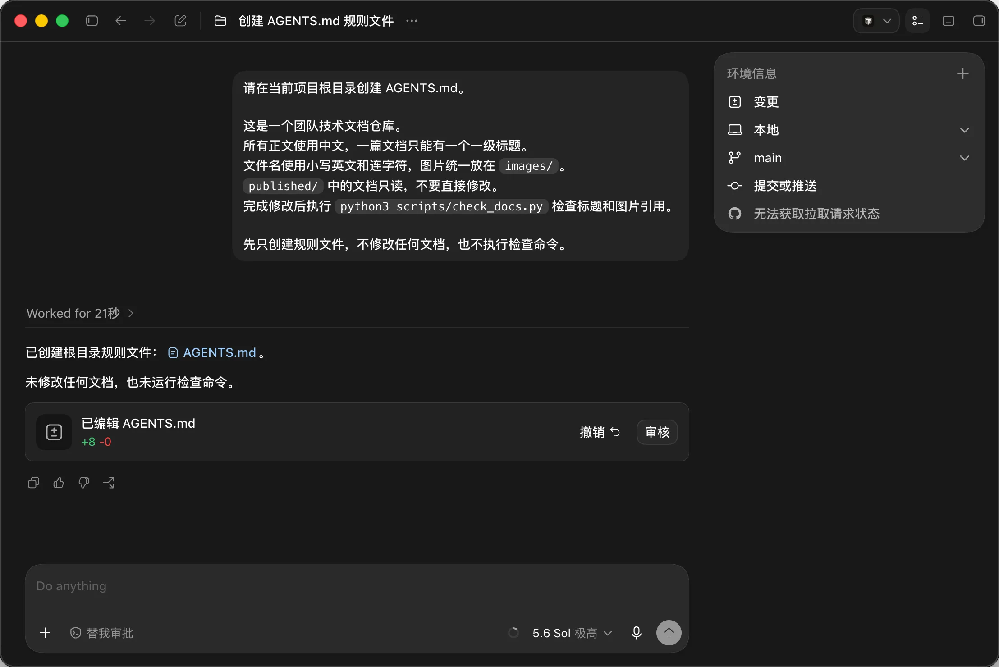
你可以在右侧审核产出的内容
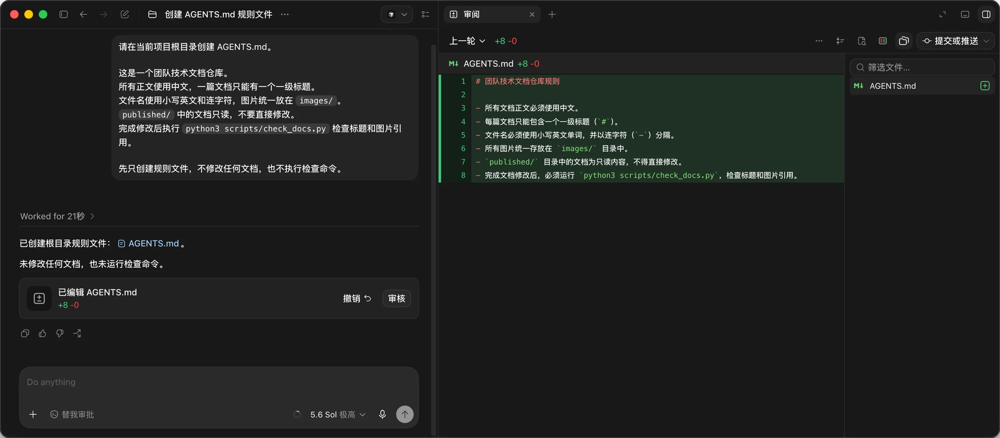
怎么确认新任务真的读到了？重新建一个任务，输入下面这段话。
只总结当前生效的项目规则，并列出规则来自哪些 AGENTS.md 文件。
不要修改任何文件，也不要执行构建命令。
返回结果应该包含中文正文、文件命名、图片目录、published/ 只读和检查命令等规则。
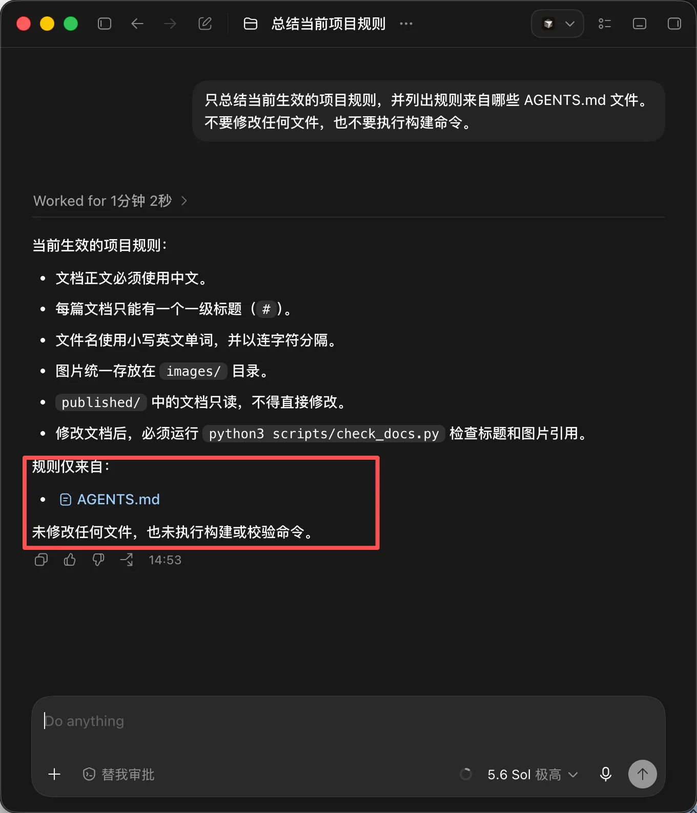
AGENTS.md 规则怎么加载？
项目根目录会多出一份 AGENTS.md。它的最小内容可以长这样。
# 项目说明
这是一个团队技术文档仓库。
## 文档规则
- 所有正文使用中文
- 一篇文档只能有一个一级标题
- 文件名使用小写英文和连字符
- 图片统一放在 `images/` 目录
## 修改约束
- `published/` 中的文档只读
- 不要创建正文没有引用的图片
- 完成修改后执行 `python3 scripts/check_docs.py`
这份文件没有神秘语法，就是 Markdown。真正影响效果的是内容够不够具体。
「注意文档质量」这种话基本等于没说。什么叫质量好，模型还得自己猜。换成「只能有一个一级标题」「图片统一放进哪个目录」「修改后执行哪条检查命令」，Codex 才知道下一步该做什么，也知道怎么证明自己做完了。
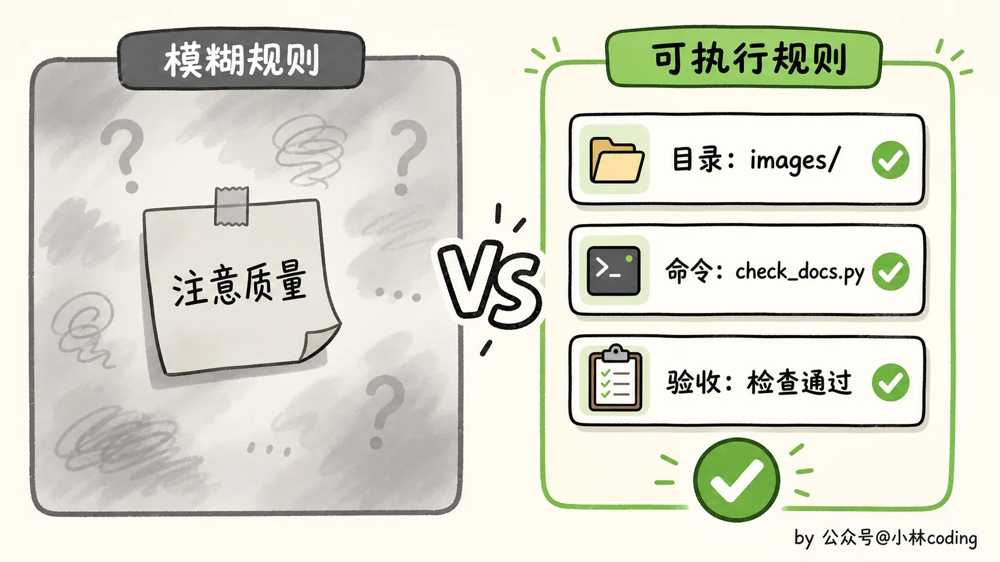
工作目录也不只有项目根目录这一层。个人级规则放在 ~/.codex/AGENTS.md，适合所有项目通用的偏好。Codex 里可以通过「Settings > Personalization」编辑。项目根目录写团队共识，子目录则放模块专属规则。
~/.codex/
└── AGENTS.md # 个人全局规则
product-docs/
├── AGENTS.md # 整个文档仓库的规则
├── drafts/
├── published/
├── images/
└── api/
├── AGENTS.override.md # API 文档的覆盖规则
└── payment-api.md
Codex 启动时，会从项目根目录一路走到当前工作目录。每一层最多选一个规则文件，再按从远到近的顺序拼起来。离当前目录越近的规则排在越后面，发生冲突时也就拥有更高优先级。
同一层如果同时存在 AGENTS.override.md 和 AGENTS.md，Codex 会优先选择 override 文件。这一层只取优先命中的那一份，不会把两份都读进来。
如果 Codex 当前打开的是仓库根目录，后面才让它去改 api/，它不会因为读到了 API 文档，就自动把更深处的 AGENTS.md 补进当前规则链。要测试 API 目录的规则，可以在 Codex 中把这个子目录作为本地项目打开，或者把所有文档都要遵守的规则写到根目录。
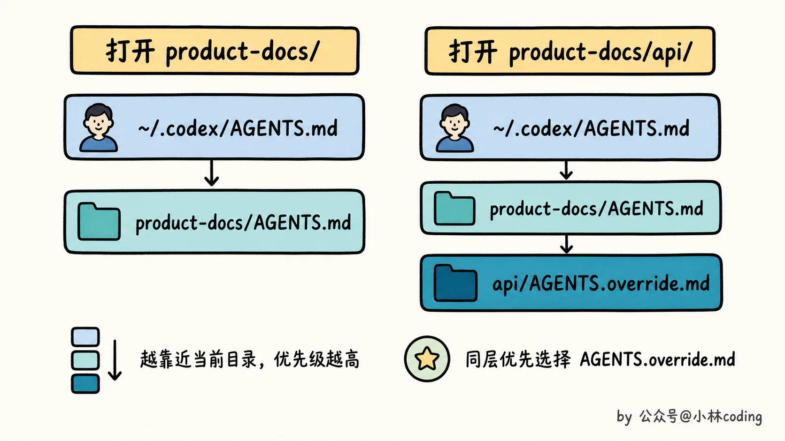
Codex 默认会限制项目规则合并后的总大小，官方文档给出的默认上限是 32 KiB。这个文件可以继续引用架构文档和专项说明，不需要把所有资料全文放进来。
每次都要遵守的放 AGENTS.md。只有做发布、Review、迁移时才需要的长流程，应该交给下一件工具。
02｜Skills：专项知识该放哪？
为什么不能全塞进 AGENTS.md ？
项目里总有一些知识很重要，却不是每次任务都要用。
比如每次发布都要确定起始版本、整理提交、过滤内部改动，再按团队模板生成 Release Notes。这套流程很重要，但平时改文档、查问题时根本用不上。
要是全部塞进 AGENTS.md，每一个任务都会带上这些内容。今天只是改个错别字，Codex 也得背着整份发布手册上班。上下文被占用了，注意力也被摊薄了。
那能不能等用到时再读？可以，这就是 Skill。
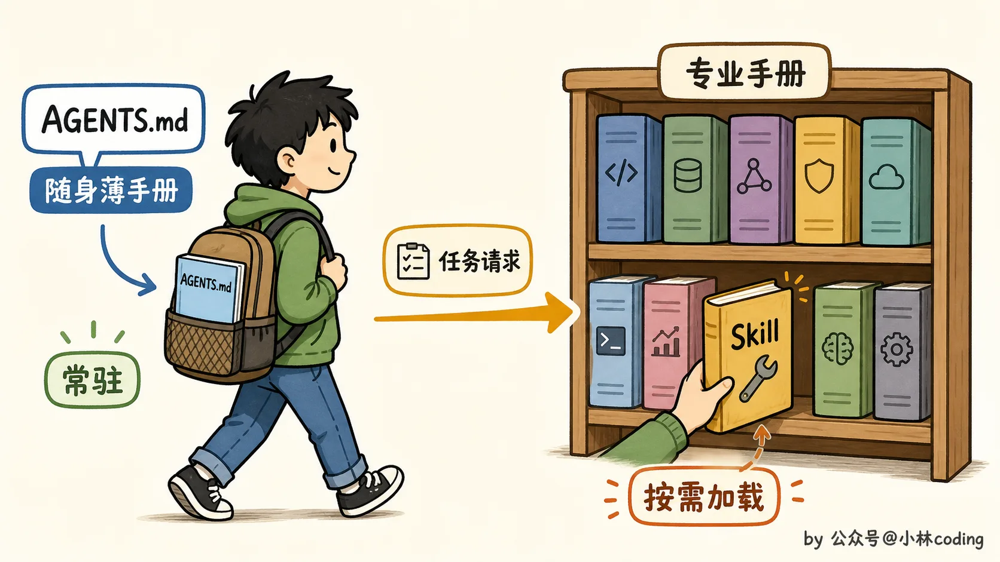
怎么创建和使用 Skill？
Codex 里内置了 $skill-creator。不用先手写文件，直接把团队生成 Release Notes 的流程说给它。
$skill-creator 为当前项目创建一个 release-notes Skill。
它用于根据指定的 Git Tag 到当前分支之间的真实改动生成发布说明。
先确认起始版本，再读取提交和改动文件。
过滤合并提交、纯格式调整和 CI 配置更新。
把内容分成新功能、问题修复和破坏性变更。
使用面向用户的语言，每一项都要能追溯到提交或文件证据。
只生成草稿，不创建 Tag，也不发布版本。
同时提供 Release Notes 模板和收集提交的脚本。
生成项目共享 Skill，先只创建文件，不开始生成发布说明。
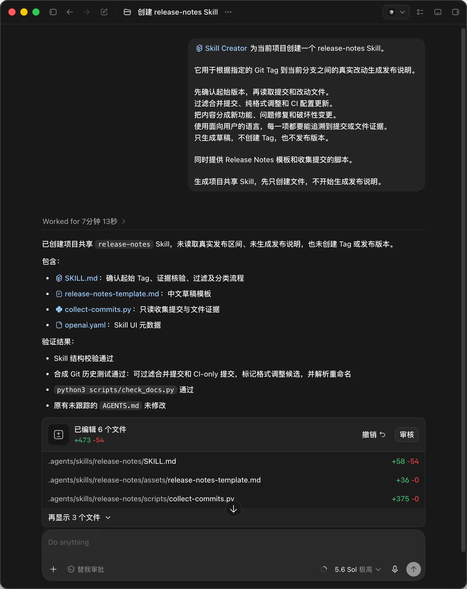
创建好 skill 之后，打开 Codex 侧边栏的「Skills」页面，应该能看到 release-notes。
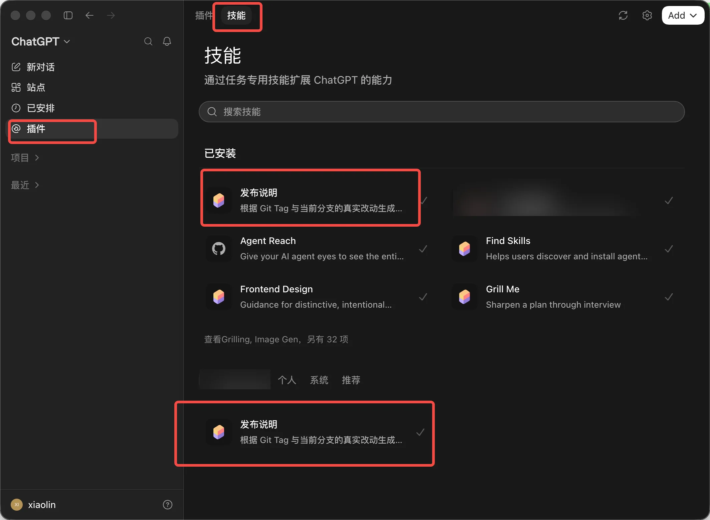
接着新建一个任务，显式调用这个 Skill。
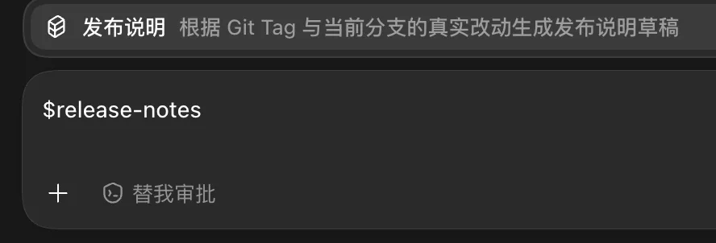
$release-notes 根据 v1.4.0 到当前分支之间的改动，
生成 v1.5.0 的发布说明草稿。
不要创建 Tag，也不要发布 Release。
你也可以不写 $release-notes，直接说「根据 v1.4.0 之后的改动生成发布说明」。只要任务与 Skill 描述匹配，Codex 也可以自动选中它。
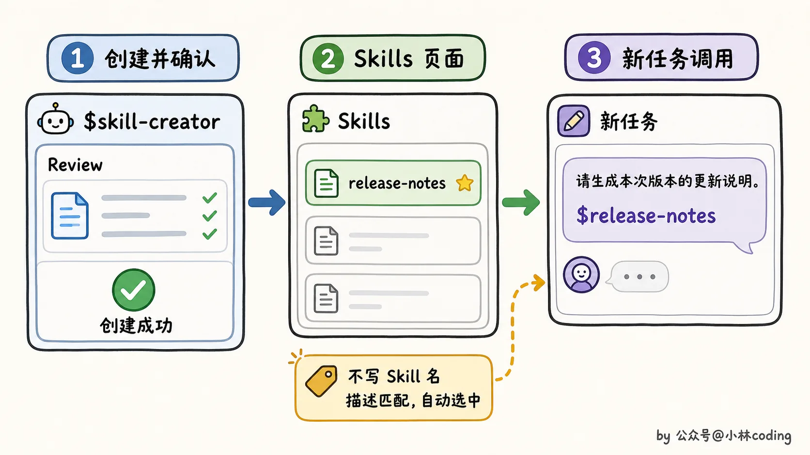
Skill 是怎么工作的？
创建后的 Skill 目录如下。
release-demo/
└── .agents/
└── skills/
└── release-notes/
├── SKILL.md
├── references/
│ └── release-template.md
└── scripts/
└── collect-commits.sh
最小版本其实只要一个 SKILL.md。
---
name: release-notes
description: 准备版本发布说明时使用，根据指定 Git Tag 到当前分支之间的真实改动，生成可追溯的 Release Notes 草稿。
---
# Release Notes 流程
1. 确认用户给出的起始 Git Tag 存在
2. 运行 `scripts/collect-commits.sh <tag>` 收集提交和改动文件
3. 过滤合并提交、纯格式调整和 CI 配置更新
4. 按新功能、问题修复和破坏性变更分类
5. 使用面向用户的语言，不直接复制提交信息
6. 每一项标出可追溯的提交或文件证据
7. 按 `references/release-template.md` 生成草稿
只生成发布说明草稿，不创建 Tag，不调用发布接口。
这里的关键字段是 description。Codex 会根据这句话判断什么时候应该使用 Skill，所以不能只写「发布工具」，要写清它做什么、什么时候用、产出什么。
一个 Skill 的核心是 SKILL.md，也可以携带脚本、参考资料、模板和其他资源。项目共享 Skill 放在 .agents/skills/，个人跨项目使用的 Skill 放在 ~/.agents/skills/。注意这里是 .agents，不是 .codex。
Codex 启动时先看每个 Skill 的名称和描述。当用户任务与描述匹配，或者你显式点名某个 Skill 时，它才读取完整正文。正文里引用的长资料和脚本，也可以继续按需读取或执行。
简单来说，Codex 平时只记住「书名和简介」，接到任务后才去书架拿对应的书。这就是 Skill 的渐进式加载。
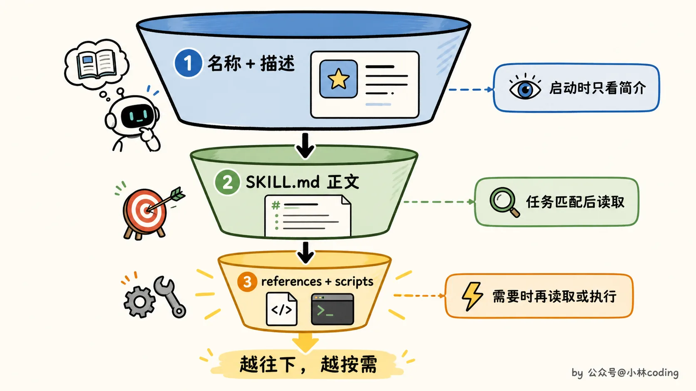
03｜Subagents：怎么变成一支小团队？
主对话为什么越干越乱？
假设团队准备评估一套新的日志平台，需要同时调查产品能力、Java 接入方式和历史数据迁移风险。全部由主 Agent 处理，搜索结果和中间资料很快就会挤占主上下文。
Subagent 可以把这三路调查拆到独立上下文中并行完成。主 Agent 负责分工、收集结果和整理结论，中间过程则留在各自的子任务里。
在 Codex 里，主任务派出工作后，界面会显示每个 Subagent 线程。你可以点进去查看调查过程，再回到主任务查看合并后的结果。
怎么安排 Subagent？
先说清一个容易混淆的点。Subagent 是 Codex 临时派出去执行某个子任务的独立线程，自定义 Agent 则是可以反复使用的「岗位模板」。
普通的并行任务，不创建任何配置也能直接派 Subagent。只有某类分工经常出现时，才值得把职责写进 .codex/agents/，以后重复使用。
这次为了同时演示「固定岗位」和「并行派发」，我们先为日志平台调研创建三个自定义 Agent。
请在当前项目创建三个只读的自定义 Agent。
capability_researcher 只负责调查查询、告警、权限和运维能力。
integration_researcher 只负责调查 Java、OpenTelemetry 和现有监控的接入成本。
migration_researcher 只负责调查旧查询、历史数据和迁移风险。
每个 Agent 都要区分官方资料、项目现状和自己的推断，并保留来源。
先只创建 `.codex/agents/` 下的配置文件，不开始调研。
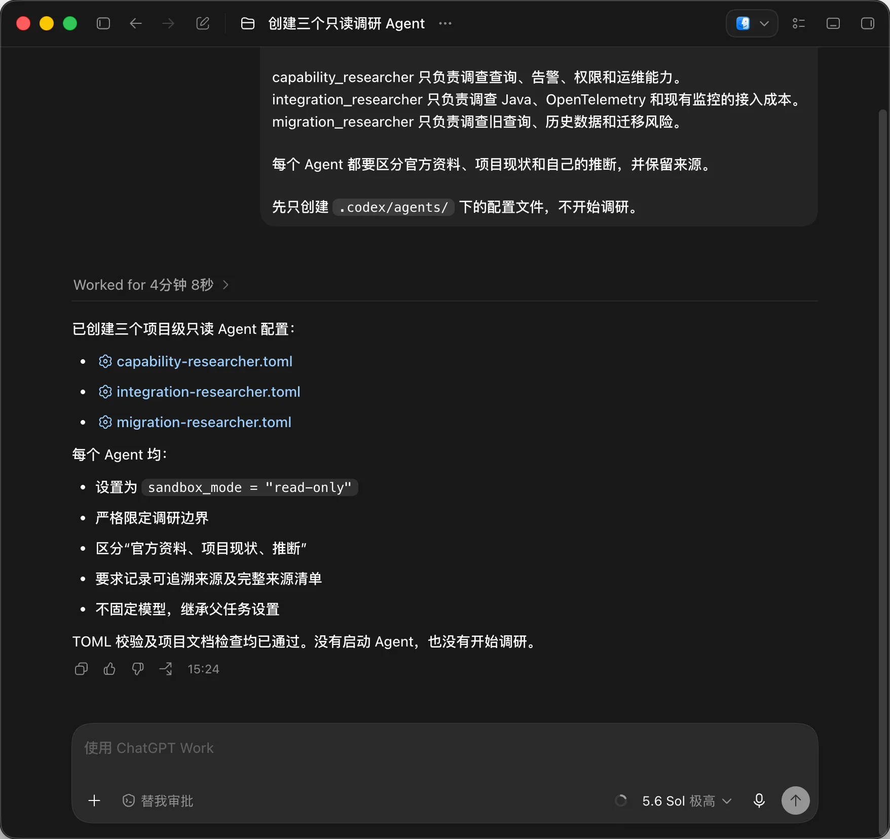
三个岗位模板创建好后，再新建一个任务，把三路调查分别派给对应的 Subagent。
评估当前项目是否适合采用候选日志平台。
请并行安排三个 Subagent：
1. capability_researcher 调查产品能力和限制
2. integration_researcher 调查 Java 接入方式和改造成本
3. migration_researcher 调查迁移步骤、数据风险和回退方案
等三路结果回来后合并去重，输出适用条件、主要风险和待确认问题。
只做调研，不修改当前项目。
任务开始后，Codex 会展示三个 Subagent 的活动。
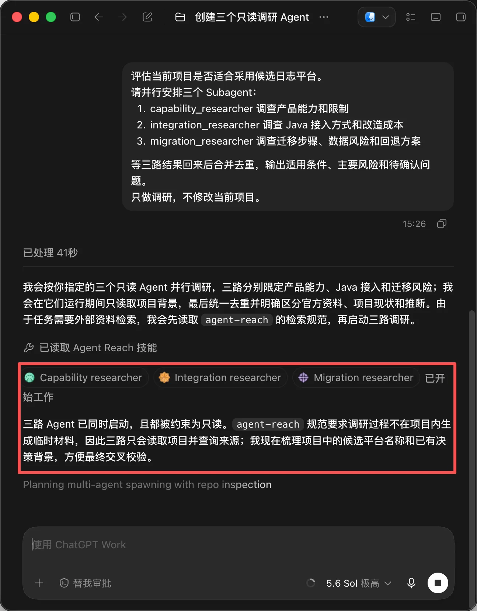
Subagent 是怎么工作的？
Codex 负责创建 Subagent、派发任务、等待结果，再把多路结果交给主 Agent 统一整理。
| 阶段 | 发生的事情 |
|---|---|
| 拆分 | 主 Agent 找出可以独立处理的子任务 |
| 派发 | 为每个 Subagent 指定目标、边界和输出格式 |
| 执行 | 各个 Subagent 在自己的上下文中使用模型和工具完成任务 |
| 回传 | Subagent 把结论和必要证据返回主 Agent |
| 合并 | 主 Agent 等待各路结果，再去重并生成最终回答 |
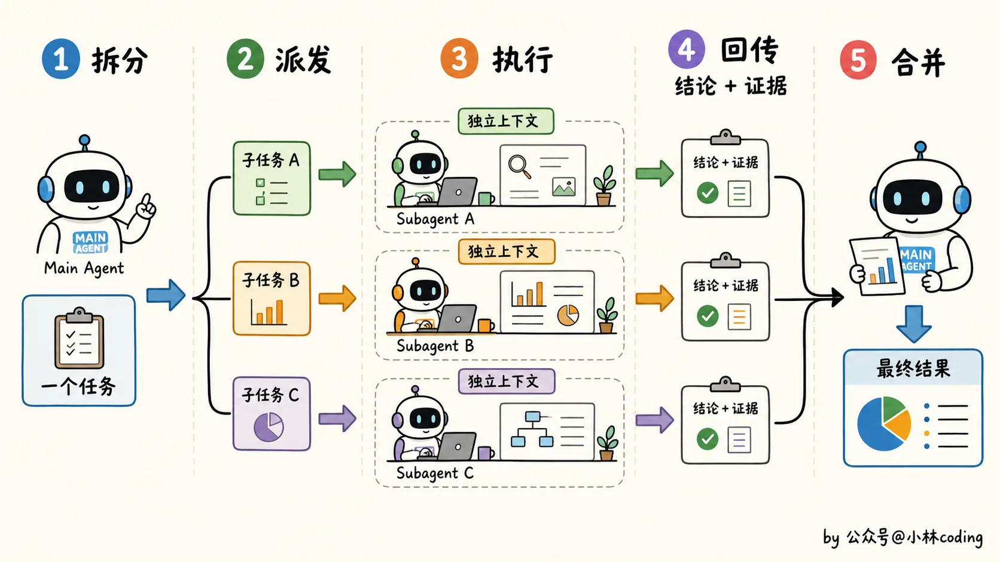
独立上下文是这套机制的关键。一个 Subagent 在调查中产生的搜索结果、命令输出和中间笔记，不需要全部堆进主上下文。主 Agent 最后拿到的是整理过的结论，而不是子任务的全部过程。
Subagent 默认继承主任务的权限模式，并在当前工作区内使用工具。因此，代码探索、资料整理、测试和问题归类这类互相独立的任务，很适合并行。多个 Subagent 同时修改同一批文件时，则可能产生冲突。
如果需要几路任务同时改代码，可以在 Codex 中分别创建多个顶层任务，并为它们选择独立 Worktree。Worktree 提供文件层面的隔离，而 Subagent 提供上下文和分工层面的拆分，两者解决的不是同一个问题。
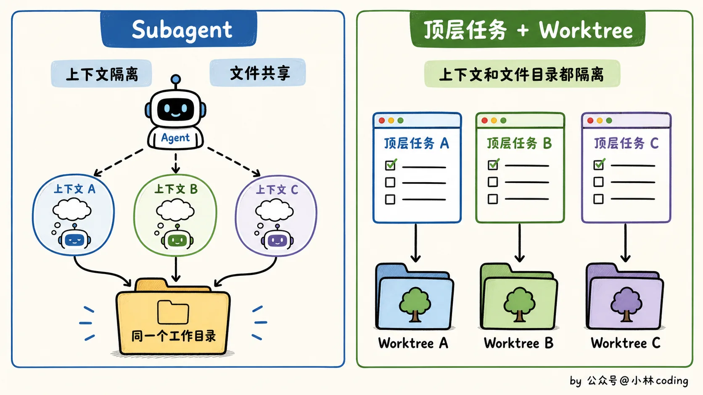
Codex 已经内置 default、worker 和 explorer 等通用 Agent。如果团队需要固定职责，也可以在 .codex/agents/ 中创建项目级自定义 Agent。不过，普通并行任务不必先定义岗位，直接在提示词中说明「请并行安排三个 Subagent」即可。
04｜MCP：怎么接上外部系统？
为什么需要 MCP？
Codex 可以读取项目文件、修改代码和执行本地命令，但完成一个真实任务，往往还需要仓库之外的信息。
产品需求可能放在云端文档，Issue 放在 GitHub，业务数据放在数据库，项目进度则记录在协作工具中。这些信息不在当前工作区，而且还会持续变化。
如果每接入一个外部系统，都要单独定义工具说明、参数格式和返回结果，连接方式就会变得很碎片。MCP 提供了一套统一的通信规则，让 Codex 可以用相同的方式发现和调用不同的外部工具。
MCP 全称 Model Context Protocol，可以把它理解成 AI 工具世界的「通用插座」。外部服务通过 MCP 告诉 Codex 自己能提供什么数据和操作，Codex 再根据当前任务选择对应的能力。
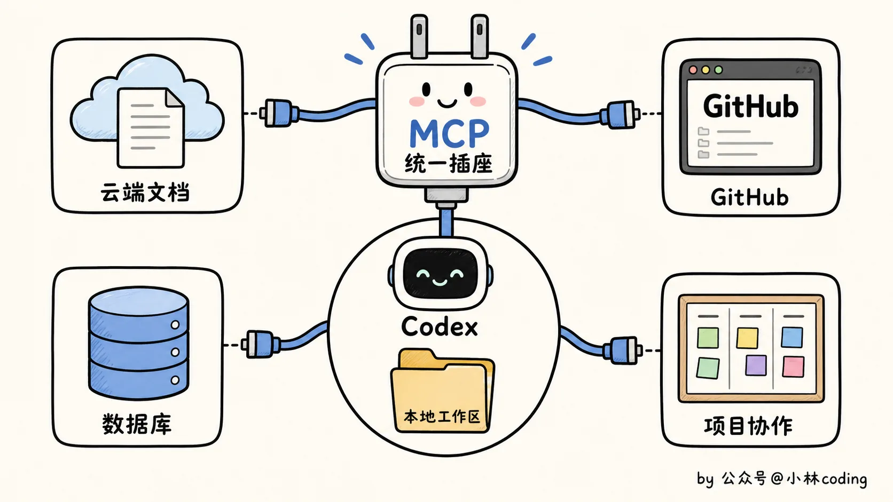
怎么接入 MCP 工具？
在 Codex 里，可以直接通过插件市场安装常见的 MCP 工具，安装完成后就能在新任务中调用。
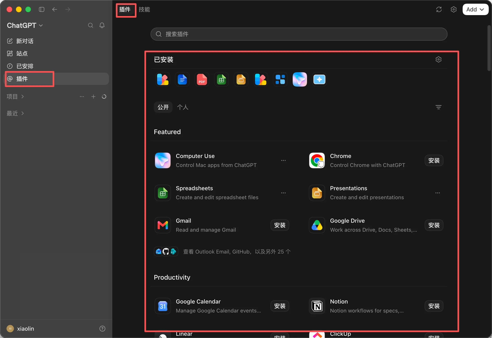
这里以 Google Drive 为例。先创建一份名为 Codex MCP Demo 的测试文档，并写入下面几条模拟内容。
项目：会员中心改版
上线时间：8 月 20 日
待办：
1. 确认新版页面文案
2. 补充登录异常监控
3. 完成上线前回归测试
接着打开 Codex 侧边栏的「Plugins」，搜索 Google Drive，进入详情页后点击加号安装。如果 Codex 提示连接 Google 账号，按页面引导完成登录和授权。
安装完成后新建一个 Codex 任务，直接发送下面的提示词。
使用 Google Drive 工具查找名为「Codex MCP Demo」的文档。
读取文档内容，输出项目名称、上线时间和待办事项。
只读取和整理，不要修改或创建任何文件。
Codex 会根据任务内容自动选择 Google Drive 提供的工具，不需要再输入额外命令。
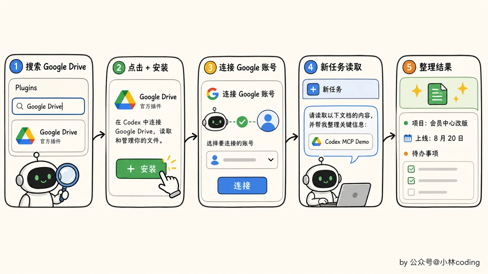
MCP 工具是怎么工作的？
看到这估计有同学就问了：我只说了一句「去 Google Drive 找文档」，Codex 怎么知道该调哪个工具？
关键就在 MCP。简单来说，MCP 就像一套统一的「工具说明书和通信规则」。Google Drive 接入后，会先告诉 Codex 自己提供了哪些工具、每个工具能做什么，以及调用时要填哪些参数。
当你说「找到 Codex MCP Demo 并读取内容」时，Codex 会先从这些说明中找到匹配的工具，生成查找文档所需的参数，再把请求发给 Google Drive。对方查到文档后把结果返回，Codex 发现还需要读取正文，就会继续调用读取工具。拿到内容后，才会整理成你看到的回答。
如果用 MCP 里的名词来对应，Codex 是 Host，负责理解任务和选择工具。Codex 内部的 MCP Client 像一个传话员，负责发送请求和取回结果。连接外部服务的 MCP Server 则负责真正执行查找、读取或写入操作。
这套流程并不只属于 Google Drive。换成数据库、GitHub 或其他外部系统，Codex 仍然可以用同一套方式理解和调用它们。MCP Server 除了提供可执行的 Tools，还可以提供可读取的 Resources 和可复用的 Prompts。
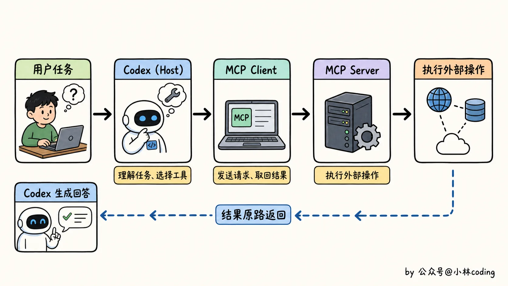
05｜Hooks：检查怎么每次都自动跑？
为什么需要 Hooks？
提示词和 AGENTS.md 都是在告诉 Codex 应该怎么做，适合放项目背景、代码规范和修改约束。但测试、格式化和安全扫描这类动作，更适合由程序在固定时机自动执行。
比如团队要求每次任务结束前都运行检查命令。如果每次都写进提示词，不仅需要重复交代，执行时机也不固定。Hooks 可以把这个动作绑定到任务的生命周期节点上。
Hooks 是什么，有什么用？
Hooks 是 Codex 任务生命周期中的自动触发器。当任务运行到某个节点时，Codex 会自动调用预先配置的 Handler，不需要用户再次发送提示词。
Hooks 可以在任务启动时加载上下文，在工具执行前检查命令，在工具执行后记录结果，也可以在任务结束前运行测试、格式化或安全扫描。
Hooks 就像安装在 Codex 工作流程中的感应门。Codex 运行到对应位置，就会触发门后的脚本。
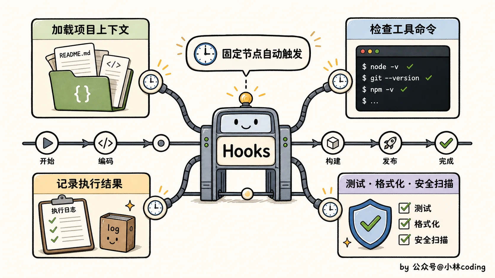
一个简单的 Hook 例子
假设文档项目中已经有 python3 scripts/check_docs.py 检查脚本，可以让 Codex 创建一个 Stop Hook，在任务准备结束时自动运行它。
请为当前项目创建一个 Stop Hook。
任务准备结束时，自动运行
`python3 scripts/check_docs.py`。
检查通过时正常结束任务。
检查失败时把摘要交给 Codex 继续处理。
请创建所需的 Hook 配置和 Handler，不修改现有文档。
接受修改后，在这个本地项目中新建一个任务。以后 Codex 每次准备结束任务，Stop Hook 都会自动运行文档检查，不需要在提示词中重复提醒。
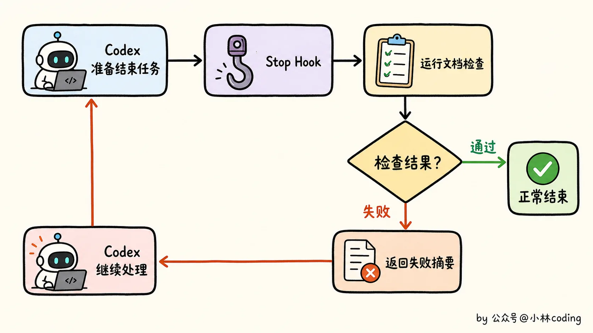
Hooks 是怎么工作的？
Hook 配置主要说明三件事：监听哪个生命周期事件、什么条件下命中，以及命中后执行哪个 Handler。
| 生命周期节点 | 触发时机 | 常见用法 |
|---|---|---|
SessionStart |
任务会话启动时 | 加载环境信息或项目上下文 |
UserPromptSubmit |
用户提交任务时 | 记录或补充输入上下文 |
PreToolUse |
工具执行之前 | 检查命令或阻止不允许的操作 |
PostToolUse |
工具执行之后 | 记录结果或补充校验 |
Stop |
任务准备结束时 | 运行测试、格式化或安全扫描 |
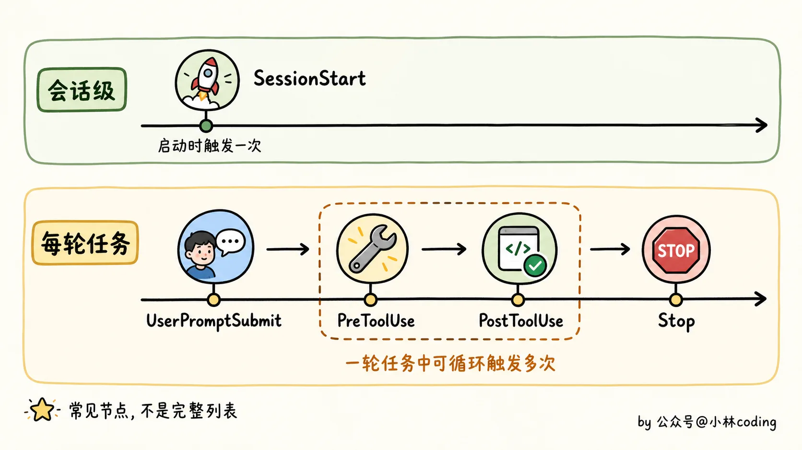
当 Codex 运行到这个节点时，会先找到匹配的 Hook，再调用对应的 Handler。Codex 会通过标准输入把当前工作目录和事件名称等信息交给 Handler。如果是工具相关事件，输入中还会包含工具名称和参数。
Handler 执行完成后，再通过退出码或 JSON 结果告诉 Codex 是继续运行、停止当前动作，还是把新的上下文交回给模型。
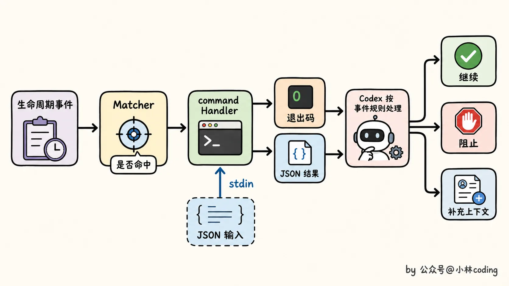
最后
最后用一张表，把这五项能力的作用放在一起。
| 能力 | 作用 |
|---|---|
AGENTS.md |
让 Codex 在项目中持续遵守固定规则 |
| Skills | 封装可复用的专项知识和操作流程，按需加载 |
| Subagents | 拆分独立子任务，并行调查并汇总结果 |
| MCP | 连接仓库外的数据、工具和外部系统 |
| Hooks | 在 Codex 的固定生命周期节点自动执行动作 |
今天的分享就到这里，我们下次见！